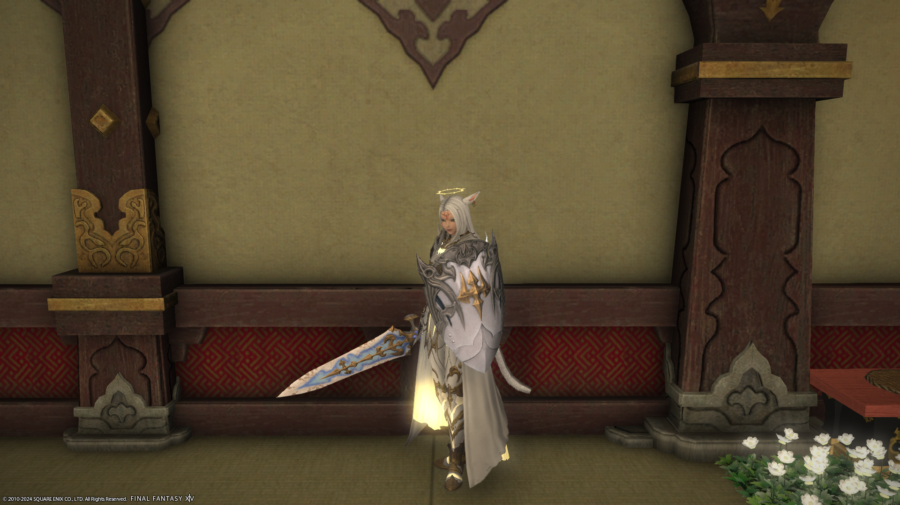
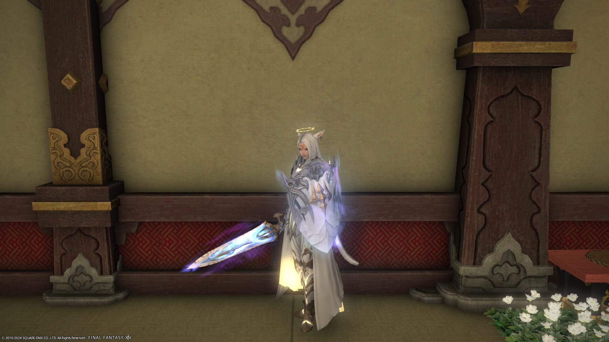
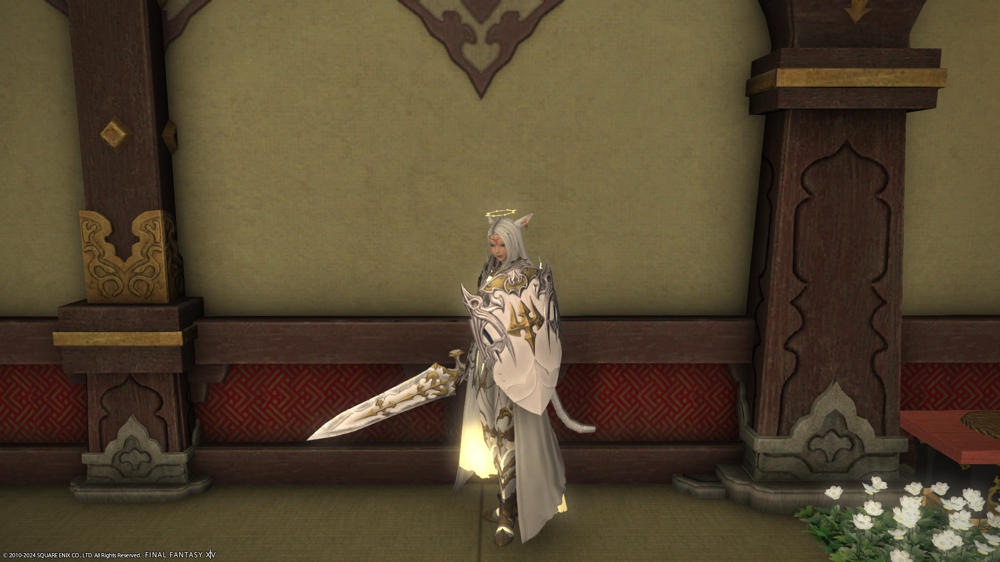
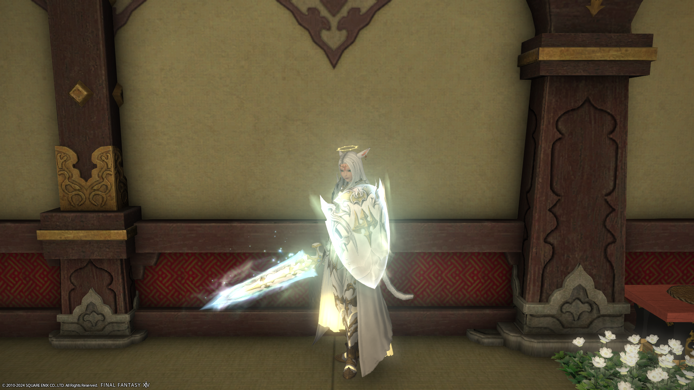
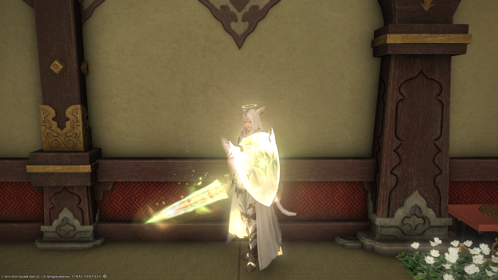
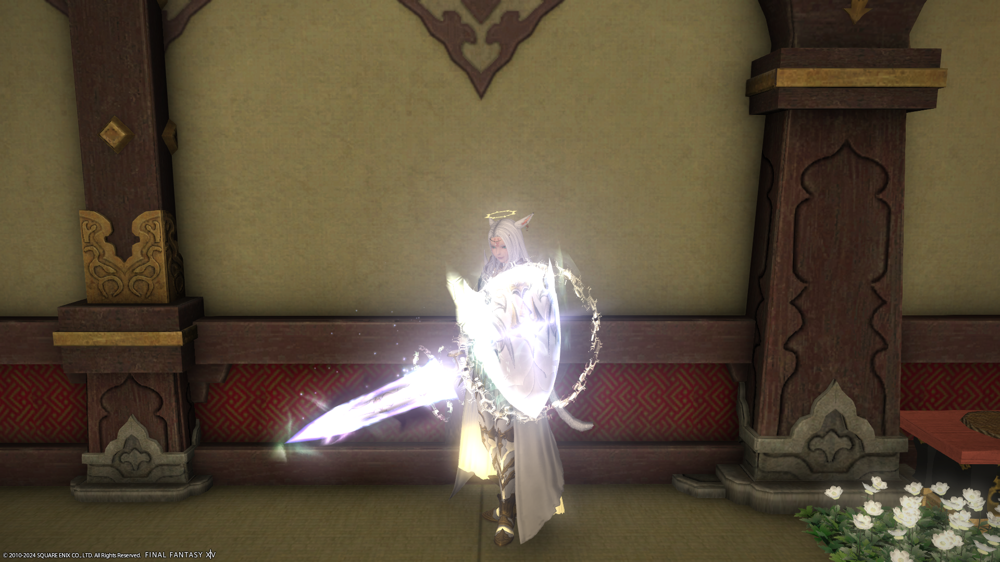
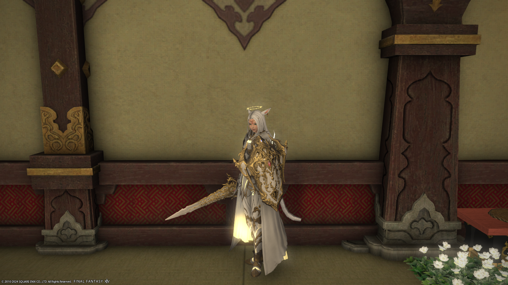
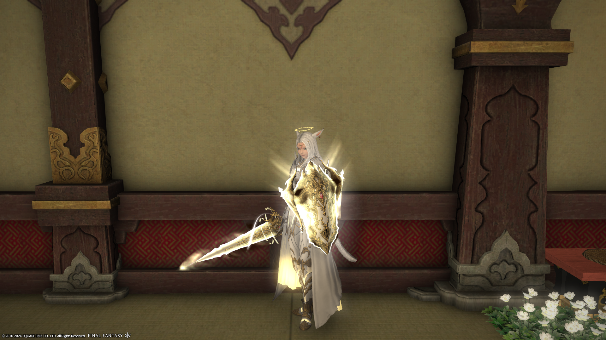

Tableau récapitulatif des étapes de l'arme relique :
(Cliquez sur une étape pour l'afficher)
| Étapes | ||||||||
| Mémoquartz poétique nécessaire | 15 | 60 | 0 | 900 | 1 200 | 0 | 800 | 600 |
| Sceaux de Grande Compagnie nécessaire | 0 | 0 | 0 | 0 | 0 | 0 | 80 000 | 0 |
| Gils nécessaire | ≈ 20 000 | 0 | 0 | 0 | 0 | 0 | 400 000 | 0 |
L'arme relique 50 vous demandera un total de 3 575 Mémoquartz Poétique, 80 000 Sceaux de Grande Compagnie et environ 420 000 Gils. (Le prix des nombreux TP n'est pas pris en compte)
Si c'est votre 1ère arme relique 50 il vous faudra faire la suite de quêtes des armes du zodiaque:
L'âme des armes -> Les Chroniques du zodiaque -> Radiance sphérique -> Brillance stellaire -> L'harmonisation des âmes -> Une idée de génie -> Dernier fragment d'un long voyage -> L'heure du réveil
(quêtes bonus de fin de saga) Un titre pour deux -> La goutte d'eau qui fait déborder la bouilloire
PNJ: Gerolt
Objets necéssaire: 1 Huile de trempe de Radz-at-Han
Parler à Gerolt qui vous donnera une quête afin d'obtenir l'arme de base.
Cette quête vous demandera d'aller chercher l'arme cassé dans un lieu précis puis de la restaurer en donnant à Gerolt une arme sertie de matérias précisé dans la quête (l'arme est craftable ou achetable à l'HV, les matérias sont achetable à l'HV).
Vous devrez ensuite faire le défi 50 "La chimère dhorme du Coerthas" avec le job de l'arme recherché (le défis peut être fait en désynchro).
Gerolt vous dira alors d'aller voir Rowena à Mor Dhona qui vous demandera de faire le donjon 50 "Le Château d'Amdapor" (toujours possible en désynchro).
Retourner voir Gerolt qui vous demandera de tuer des monstres en étant équipé de l'arme inachevée, puis de faire le défi 50 "L'hydre d'Halatali" toujours équipé de l'arme et "Le Cratère des tisons (brutal)", "Hurlœil (brutal)", "Le Nombril (brutal)".
Il vous sera ensuite demander une Huile de trempe de Radz-at-Han (achetable pour 15 mémoquartz poétique) (ATTENTION: cet objet est unique, vous ne pouvais pas en avoir plusieurs si vous faite plusieurs armes 50).
|  |
PNJ: Gerolt
Objets necéssaire: 3 Lymphe de Thavnair
Utilisez le fourneau à coté du mog pour échanger l'arme antique et 3 Lymphes de Thavnair contre l'arme zénith. (les lymphes sont échangeable pour 20 mémoquartz poétiques soit 60 mémoquartz au total)
|  |
PNJ: Jalzahn
Objets necéssaire: 12 Atmas du zodiaque différents
Vous devrez faire des aléas, en étant équipé d'une arme zénith, dans différentes zones de Realm Reborn afin d'obtenir les 12 atmas du zodiaque (1 de chaque) puis parler à Jalzahn en face de Gerolt pour renforcer votre arme zénith.
| Atma | Lieux des aléas |
| Âtma du bélier | Noscea Centrale |
| Âtma du cancer | Noscea Occidentale |
| Âtma des poissons | Basse-Noscea |
| Âtma du verseau | Haute-Noscea |
| Âtma du lion | Noscea Extérieure |
| Âtma de la vierge | Forêt Centrale |
| Âtma du capricorne | Forêt de l'Est |
| Âtma du sagittaire | Forêt du Nord |
| Âtma des gémeaux | Thanalan Occidental |
| Âtma de la balance | Thanalan Central |
| Âtma du taureau | Thanalan Oriental |
| Âtma du scorpion | Thanalan Méridional |
|  |
Parler à G'jusana, à Mor Dhona, pour lui acheter un tome des chroniques du zodiaque pour 100 mémoquartz poétiques. Vous ne pouvez avoir qu'un tome à la fois et devrez faire les 9 pour améliorer votre arme.
Pour chaque tomes, vous devrez tuer 10 groupes de 3 ennemis, finir 3 donjons (faisable en désynchro), réussir 3 mandat et terminer 3 aléas. Après avoir fini les 9 livres, retourner voir Jalzahn dans la forêt du nord pour renforcer votre arme atma.
|  |
PNJ: Hubairtin, Jalzahn, Brangwine, Auriana
Objets necéssaire: 3 Encre enchantée de haute qualité, 75 Alexandrite
Aller voir Hubairtin, au Thanalan central, muni de 3 Encres enchantée de haute qualité achetable pour 25 mémoquartz poétique l'unité. Il vous donnera un parchemin que vous devrez sertir de matéria de rang 1 à 4 (achetable à l'HV) en utilisant des Alexandrites (récuperable avec des Cartes mystérieuse, 5 Alexandrites par Cartes mystérieuse).
Vous pourrez récupérer ces cartes en faisant la quête "Échange de bons procédés" (en parlant au PNJ Brangwine à Mor Dhona, répétable 1 fois par jour) ou en les achetant pour 75 mémoquartz poétique à Mor Dhona au PNJ des mémoquartz Auriana.
(ATTENTION: la Carte mystérieuse est considéré comme une carte aux trésors, vous ne pouvez donc en avoir qu'une seule par inventaire, il est donc recommandé d'en avoir une ouverte, une dans la sacoche du chocobo et une dans votre inventaire pour minimiser les téléportations)
NB: le sertissage n'est pas toujours réussi, s'il échoue vous perdrait la matéria mais pas l'Alexandrite. Vous pourrez sertir aux maximum 11 matéria de chaque rang par statistiques.
Après avoir sertie 75 fois le parchemin, retourner voir Jalzahn dans la forêt du nord pour renforcer votre arme animus.
|  |
PNJ: Jalzahn
Objets necéssaire: Aucun
Parler à Jalzahn afin d'effectuer un scellage éthéréen. Vous devrez ensuite faire des donjons, défi et raid de niveau 50 ou moins équipé de votre arme relique pour accumuler des esprits (fonctionne en désynchro). Vous pourrez voir votre avancé en utilisant la Lunette du zodiaque dans votre inventaire.
Toutes les 2 heures un bonus sera donné à 1 donjon/défi/raid aléatoire qui augmentera le nombre d'esprit reçu par l'arme.
NB: Le meilleur donjon à farmer serait Le Val d'Aurum en désynchro car il est le plus rapide (Aucune porte à ouvrir ni objets à ramasser, environ 2min pour finir un donjon). Il faudrait le terminer 42 fois s'il n'y a pas de bonus ou 26 fois si vous êtes chanceux.
NB 2 : la Lunette du zodiaque vous donnera le nombre d'esprits présent dans l'arme via des phrases, il vous faudra atteindre l'état resplandissant. A la fin d'un donjon, un petit message s'affichera pour vous dire combien d'esprits vous avez reçu via une phrase décrivant l'éclat de votre arme.
| Description de la lunette | Nb d'esprits | Phrase de fin de donjon | Nb d'esprit obtenu | |
| Auncun éclat | 0 - 199 | quasiment imperceptile | 8 | |
| Quasiment imperceptible | 200 - 399 | Emet un éclat très faible | 16 | |
| Très faible | 400 - 599 | Emet un faible éclat | 32 | |
| Faible | 600 - 799 | Emet un vif éclat | 48 | |
| Certain | 800 - 999 | Emet un éclat très vif | 96 | |
| Vif | 1 000 - 1 199 | Emet un éclat éblouissant | 128 | |
| Très vif | 1 200 - 1 399 | |||
| Extrêmement vif | 1 400 - 1 599 | |||
| Éblouissant | 1 600 - 1 799 | |||
| Quasi aveuglant | 1 800 - 1 999 | |||
| Resplendissant | 2 000 |
|  |
PNJ: Jalzahn, Guiding Star, Adkin, Brangwine, Papana
Objets necéssaire: 4 Noyau de grand monstre explosif, 4 Eau de montagne sacrée, 1 Bouilloire en laiton, 1 Cristal d'airain, 1 Résine allagoise et 1 Sable de halonite
Il vous faudra tout d'abord acheter un grand nombres d'objets dont vous aurez besoin pour finaliser 4 ensemble de quêtes qui vous donneront les 4 objets nécessaire à l'évolution de votre arme. Vous devrez acheter 4 Noyau de grand monstre explosif pour 20 000 sceaux de grande compagnie l'unité, 4 bouteilles d'Eau de montagne sacrée pour 200 mémoquartz poétique l'unité.
4 des objets necessaire coûtent 100 000 gils chacun et sont achetables auprès des PNJ suivant: Marchand, Bazardeur, Quincaillière et Quincaillier(chaqu'un d'entre eux vend 1 des 4 objets).
Il vous faudra ensuite fabriquer (ou acheter à l'HV pour environ 100 000 gils l'objet) 8 objets de quêtes en HQ. Pour les fabriquer, il sera necessaire d'avoir tous vos artisans et récolteurs au niveau 50 minimum (plus leurs niveaux seront élevés, plus la fabrication et la récolte sera simple) ainsi que les recettes experte 1 de tous les artisans échangeable à Talan contre un objet fabriqué en HQ.
| Nom de l'objet | Matériau de recyclage | Autres matériaux |
| Parchemin parfait | 1 Vieux rouleau de vélin | 2 Pierre ponce, 1 Huile de requin |
| Fixateur parfait | 1 Éther séché | 1 Sable d'électrum, 1 Pou d'éther |
| Bûches parfaites | 1 Vieille hampe de lance | 1 Cendres de grenado, 2 Rondin de cyprès |
| Étoffe antique parfaite | 1 Vieux tissu sale | 1 Eau effervescente, 1 Fil de lin, 2 Pierre ponce |
| Mortier parfait | 1 Vieil élément de mortier | 1 Plaque d'argent belahdien, 1 Madrier d'acajou |
| Pilon parfait | 1 Vieille tête de pilon | 2 Rondin de cyprès, 1 Cuir de peiste |
| Bague du feu | 1 Vieil œil-de-feu | 1 Plaque d'argent belahdien, 1 Pierre à aiguiser basilic |
| Tarte à l'anguille très spéciale | 1 Vin de cuisson artisanal | 1 Ver de Nym, 1 Pâte à tarte, 1 Beurre, 1 Poivre noir, 1 Girofle |
Les matériaux de recyclage s'obtiennent en recyclant les différents objets "séculaire" vendu par le PNJ du bazar dorée Quincaillière. Attention les objets doivent être fabriqué en HQ !
Aprés avoir obtenus tous les objets précédents, vous devrez récupérer les quêtes L'art et la matière, La liberté a un prix, Le cœur d'une mère est un trésor et Le futur bras droit de Mutamix. Ces quêtes vous demanderont les objets que vous avez récupérer précedemment ainsi que de faire 4 donjons par quêtes.
Muni de vos 4 objets de quêtes (Matière zodiacale, Livre du ciel étoilé, Alexandrite immaculée et Parchemin zodiacal) retourner voir Jalzahn afin de transformer votre arme Nexus en arme du Zodiaque.
|  |
Parler à Remon pour acheter une Mahatma à 50 mémoquartz poétique puis farmer des lumières en finissant les donjons et défis de niveau 50 ou moins. Vous devrez faire cela 12 fois pour améliorer les 12 Mahatmas (sans bonus 2 val d'aurum sont suffisant pour réveiller une mahatma).
Tout comme l'étape 6, vous pourrez voir la progression des Mahatma en utilisant la Lunette du zodiaque et farmer les mêmes donjons.
Une fois les 12 Mahatma éveiller, retourner voir Jalzahn pour la dernière fois afin d'éveiller votre arme du Zodiaque en arme du Zodiaque Zêta.
|  |